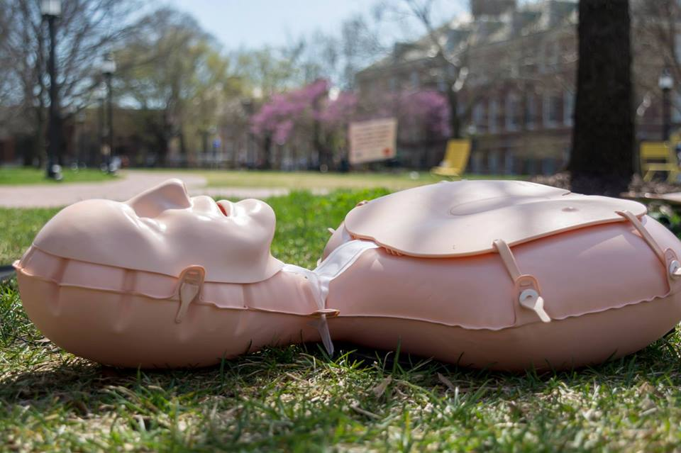

Medical Emergency?
In case of a medical emergency, HERO's free-of-charge service can be reached by calling 410-516-7777, by using one of the emergency phones (blue lights) on campus, or by contacting the nearest Hopkins security personnel.
Johns Hopkins University's 24/7 collegiate EMS unit, proudly situated in the heart of Baltimore, Maryland.
HERO is a professional EMS organization that operates on the Johns Hopkins Homewood Campus with the support of Lifeline's Critical Care Team, Johns Hopkins Security, and the Student Health & Wellness Center. As a 24/7 rapid response service, HERO provides free BLS-level care on over 300 calls each year. HERO has approximately 50 active members, each with at least a Maryland EMT-B certification involving 200 hours of classroom learning and over 100 training hours.
Calls answered each year
Active EMT members
Training hours per member
In case of a medical emergency, HERO's free-of-charge service can be reached by calling 410-516-7777, by using one of the emergency phones (blue lights) on campus, or by contacting the nearest Hopkins security personnel.

Looking to get CPR certified? HERO offers CPR classes! Whether you're interested in obtaining American Heart Association CPR/AED certification for yourself or your club, contact hero_cpr@jhu.edu and fill out our CPR Interest Form.

Need coverage for your event? HERO provides standby coverage at Hopkins-affiliated events throughout the year, including Spring Fair, Young Alumni Weekend, and Commencement. To request coverage, email hero_standby@jhu.edu.
HERO is dedicated to ensuring full confidentiality and protection of medical information under the protocols of the Maryland Institute for Emergency Medical Services Systems. In the same regard, the Johns Hopkins Amnesty Policy is designed to protect students who seek medical attention for themselves or others.
Learn more about our Amnesty Policy here.
The Hopkins Emergency Response Organization operates under an official Maryland EMS Organizational License. This certification ensures HERO meets all state standards for emergency medical services, training, and operational readiness.